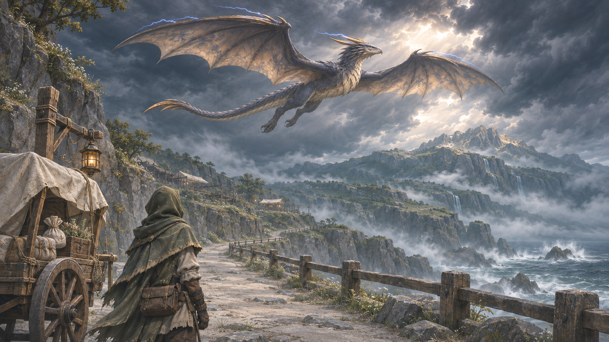
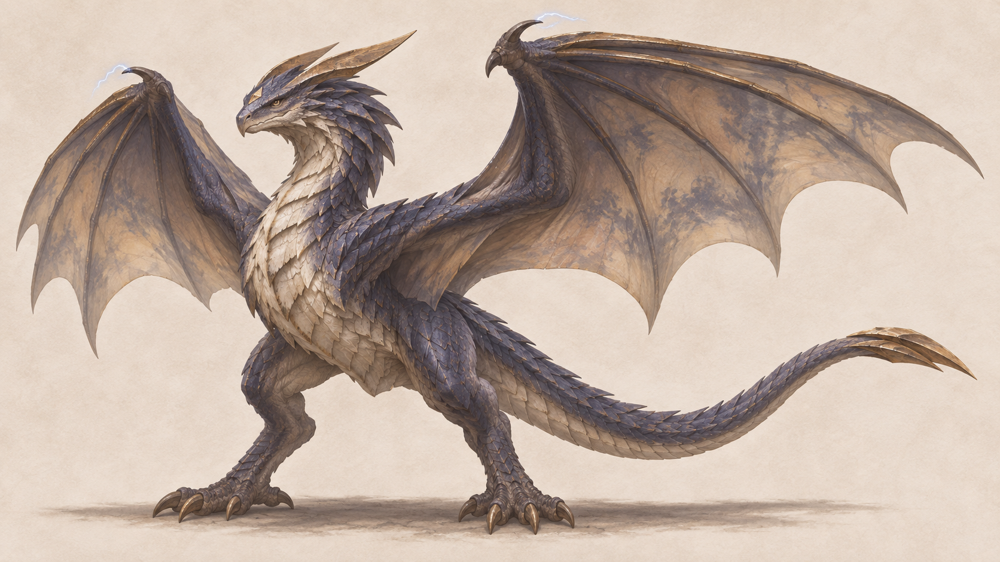
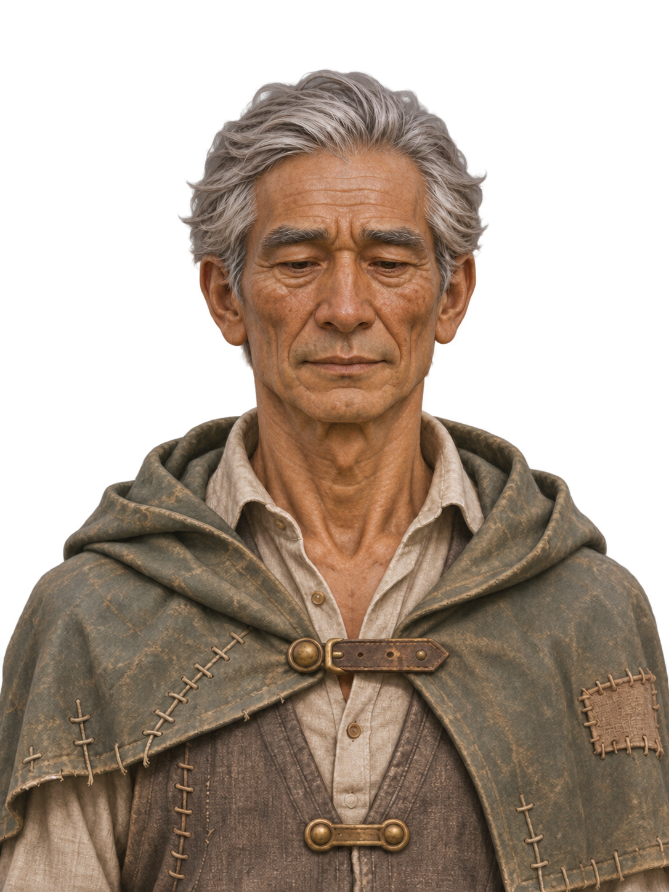
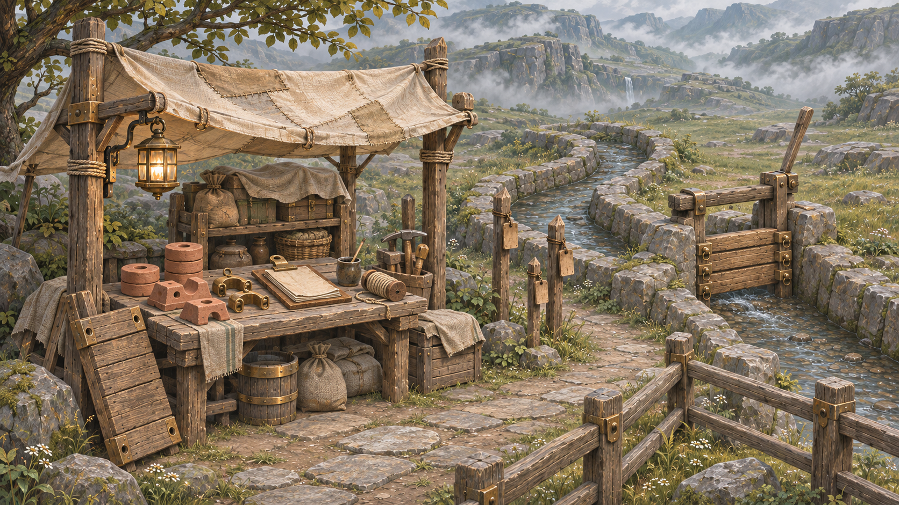
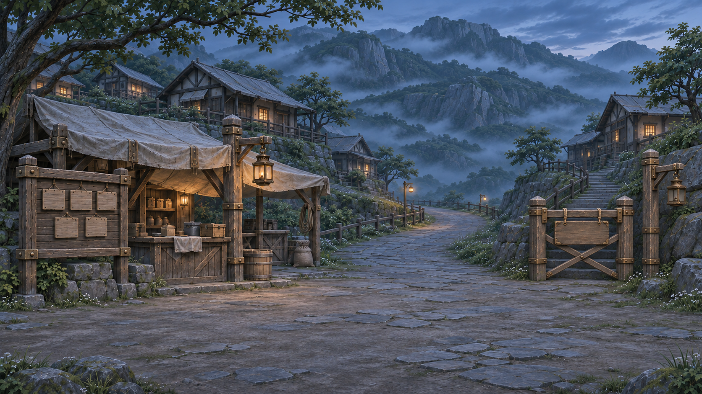
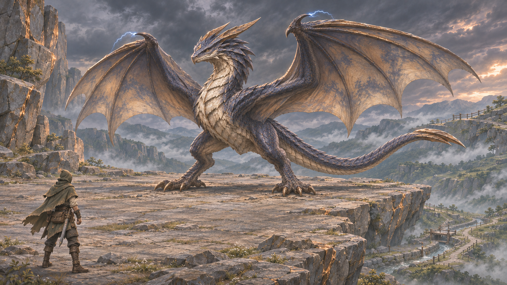
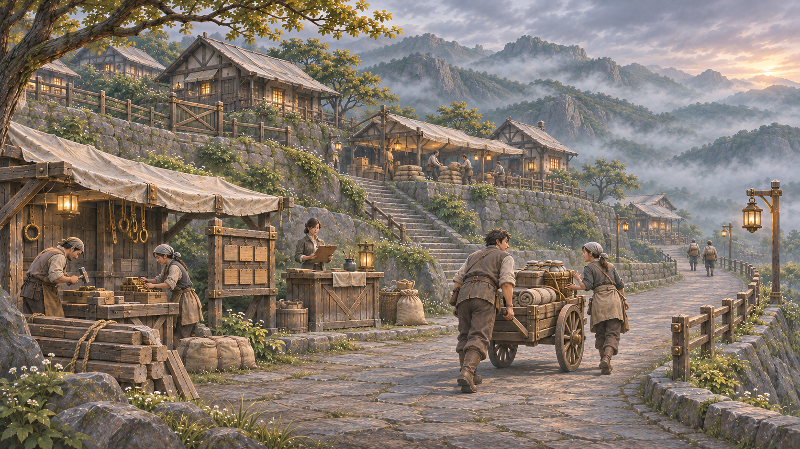

VEILBOUND HUNTERS / STORY & ART v2
帰り道の灯
雷が帰る峰

巨大な翼を追う。その先にあるのは、
人と荷が帰ってくる、いつもの道。
拡張提案・制作原画。ゲーム本体への組み込みは未実施。
本冊子は22ページの要約統合版です。物語本文、台本全文、クエスト条件、検証仕様は同梱のMD/JSONを参照してください。
本冊子は22ページの要約統合版です。物語本文、台本全文、クエスト条件、検証仕様は同梱のMD/JSONを参照してください。

巨大な翼を追う。その先にあるのは、
人と荷が帰ってくる、いつもの道。
既存の「帰り道の灯」に看板の存在を編み込み、セオルミドの戦いの後へ、オルゼリオンとの追加決戦を置きます。初仕事の補給と最後の帰還が、同じ暮らしの成果として響く構成です。
| 継承するもの | 今回の追加 |
|---|---|
| 物語ID story.homeward_lights | 副題「雷が帰る峰」と、序盤から終盤までの看板の関わり |
| ch0〜ch9の恒久ID | ch8とch9の間に追加決戦章を挿入 |
| 旧主線ST01〜ST14 | 看板の必須狩猟1件。任意依頼6件は本筋を止めない |
| ミナギ・ロクハ・イサネ・セナキ | 新しい人物を増やす代わりに、対立と責任を掘り下げる |
| 里、霧、晶脈、道を守る狩り | 雷痕と古い記録を比べ、原因と危険を切り分ける |
参照基点v0.34.0では、序章ch0・第1章ch1・sc00〜sc03が実装済み。ch2以降の見出し、今回の決戦・依頼・画像を、遊べる完成品とは扱いません。

| 項目 | 継承する看板案 |
|---|---|
| 外形 | 嵐青の鱗、象牙の胸腹、金銅の二冠と翼稜。翼腕2本＋後脚2本の4肢。 |
| 雷の経路 | 胸左右の蓄雷嚢 → 翼前縁の二条導電板 → 尾端の三枚槍。冠は硬い警告角。 |
| 生息と初出 | 主生息地は鉛雲高地。原種は中級rank.2。雨裂断崖へ巡回し、錆星高原で鉱物を補給する案。 |
| 物語での役割 | 休息・放電場所と点検路が重なる個体へ対処。天候を作る神や、異変すべての黒幕にはしない。 |
看板を追う運命を宣告せず、最初は里の一人の働き手として始めます。薬と布が届く喜びを先に置き、その後に空と地面の違和感をつなぎます。
| 章 | 場所・主な狩猟 | 物語で分かること |
|---|---|---|
| ch0 あなたの帰る場所 | 灯継ぎの里 | 依頼と帰還を記録する。主人公の名前・性別・故郷は固定しない。 |
| ch1 獣の道、人の道 | 風礫盆地 ガルドロス／セルヴァルク | 荷が届く。湿りの帯と細い焼け筋を追加記録するが、原因は断定しない。 |
| ch2 戻らない水 | 根絡み湿原 ヌメラドン／ヴェリト | 焼け筋のない場所でも水が変わる。一頭を狩れば土地全体が戻るという仮説を弱める。 |
| ch3 潮待ちの浜 | 硝砂海岸 オルグラス／ルミスカ | 安全な荷下ろし路から看板を初目撃。海岸は生息地に変更しない。 |
| ch4 閉じられた分かれ道 | 灰鐘鉱山 ボルナケル／アシュレイア | 古い作業記録は飛竜目撃より前の水位変化を示す。過去の判断を読み直す。 |
ST08後にTQ07「雲より先に、翼が鳴る」を用意。中級の別個体で予告と冷却を学べます。未受注でも後半の本筋情報と装備準備に到達できます。
| 章 | 場所・主な狩猟 | 狩りが作る成果 |
|---|---|---|
| ch5 氷に残る道 | 氷帆峡谷 キリサーヴ／ラズメル | 観測と帰路を確保。高地の古い擦過痕・新しい擦過痕を比較する。 |
| ch6 灯を持つ獣 | 霧灯樹海 テンガロ／ヴェルガイト | 痺液・灯・雷を分けて記録。胸、翼、尾の予告を学ぶ。 |
| ch7 灯を減らす夜 | 風礫盆地・里 グラセドン | 燃料と荷を必要な道へ集約。短い分流区間の試行で局所的な改善を確かめる。 |
| ch8 二つの環、一本の道 | 重霧環谷 セオルミド | 下部作業区間と帰路を確保。休息と準備を挟み、高地の点検へつなぐ。 |
| 追加決戦章 雷が帰る峰 | 鉛雲高地「鳴天の背」 オルゼリオン | 休息・放電場と点検路が重なる個体へ対処し、高地の通行運用を見直す。 |
| ch9 新しい通行記録 | 灯継ぎの里 | 遠回りの道から人と荷が帰る。霧と閉鎖区間を残し、点検と暮らしが続く。 |
安心させるための断言から、まだ分からない範囲を示す責任へ。出発と帰還を数え続け、最後の「おかえり」を支える。
元どおりの丈夫さから、次に直せる形へ。割れた面や交換周期を読み、普段使う装備の留め具を確かめる。
薬・布・部材を待つ人の時間を数える。閉鎖に反対するだけで終わらず、急ぐ荷と待てる荷を分ける。

かつて里を守った判断を隠さず、今の状況へ更新する。近道を知る誇りから、引き返せる道を残す責任へ。
荷を守る人々が見上げた先に、オルゼリオンの輪郭が現れる。安全な位置からの目撃であり、無理な戦闘開始や強制被弾は要求しません。
大きな翼の外形 → 胸と後脚の重さ → 首を上げる警告 → 胸起点の蓄電。怖さを派手な閃光だけに頼らず、後半で学べる身体の動きを先に置きます。
高地の点検路は、補修部材などを定期輸送するために残る往路。谷の安全な帰路と両方が整うことで、臨時輸送から日常運用へ戻れます。沿岸からの見通しと距離は地理の追加案として照合します。
根本の変化は、晶脈を通る湧水の長期変動と、閉じた分流路・鉱物堆積による流れの偏り。飛竜の目撃は、その全原因を一頭へ結びつける証拠にはなりません。
| 番号 | 先に見せるもの | 後から分かる意味 |
|---|---|---|
| T01 | 湿りの帯と焼け筋 | 焼け筋のない場所と、先行する水位記録を比べる。 |
| T02 | 二冠・胸・翼の変化 | 追加決戦で、胸嚢の膨らみと二条の方向を読む。 |
| T03 | 古い閉鎖札 | 当時守れた通行を知り、終章で新しい確認日を追記する。 |
| T04 | 高さの違う擦過痕 | 休息場の変化を仮説にする。同じ個体の年齢や日時を断定しない。 |
| T05 | 麻痺・光・放電の記録 | テンガロ、ヴェルガイト、看板の器官を区別する。 |
| T06 | 少なくなる灯と荷 | 下部の帰路を通し、必要な場所に集約した成果を見せる。 |
| T07 | 初仕事の荷車 | 終章でも人・荷・主人公の帰還を数え、生活の成果を回収する。 |

| 小物 | 物語上の意味 |
|---|---|
| 記録板・比較用の薄片盆 | 確定したことと仮説を並べる。文字は絵へ焼き込まず、UIで読みやすく表示。 |
| 交換できる留め具・素焼き部材 | 一度直せば永遠に持つ装置ではなく、変化を見て交換できる暮らし。 |
| 木の観測杭・区間別通行札 | 通れる範囲と見合わせる範囲を、形と向きでも区別する。 |
| 手動の分流レバー | 狩人が確保した時間に、作業班が短い区間から手入れする。 |
部品別の寸法・可動範囲・接合・3状態の差分は今後制作。架空世界の美術用器具であり、現実の電気安全や実作業の説明ではありません。
| 局面 | 身体・画面・音 | 狩人が判断すること |
|---|---|---|
| 警告 | 首を上げ、硬い二冠を高く見せる | 相手の向きと間合い。冠を発電装置や可動蝶番にしない。 |
| 蓄電 | 胸の二度の膨らみ、翼板の乾いた音 | どちらへ放電が進むか。音を消しても身体で読める。 |
| 放電 | 予告した向きの細い電光と地面の形 | 回避方向と安全な隙間。背景の雷を攻撃判定と混同させない。 |
| 冷却 | 胸が下がり、翼がたわみ、呼吸が荒くなる | 通常武器で近づく反撃機会。長時間滞空で近接を封じない。 |
テンガロは無属性・痺液による化学性の麻痺。ヴェルガイトの環冠と灯節、セオルミドの二環、看板の雷は、それぞれ別の器官と予告として学びます。

旧近道を再開すれば荷は早く届く。それでも四人は、迂回の負担を分けて安全な道を選びます。消灯は燃料と通行の集約であり、飛竜を眠らせる合図ではありません。閉じる道には横木と札を置きます。
| 担当 | この夜に引き受ける仕事 |
|---|---|
| ミナギ | 通れる区間と、まだ確かめられていない所を示す。 |
| イサネ | 薬と布、補修部材を待てる時間で分ける。 |
| ロクハ | 短い区間用の交換部材を整える。 |
| セナキ | 作業者の退避と、引き返せる道を確認する。 |
グラセドンへの対処後に小区間の試行を行い、時間を置いた報告で改善を確かめます。狩猟と補修を順につなぎ、どちらか一方だけで全部が解決したことにはしません。
セオルミドの戦いを残す理由は、既存IDを守ることだけではありません。先に帰路を確保してから次の作戦を組むことが、主人公と里の成長を形にします。
| 段階 | 場所・対象 | 成果と次に残る仕事 |
|---|---|---|
| 第8章 / ST14 | 重霧環谷 双環獣セオルミド monster.segranio | 下部作業区間と帰路を確保。短い補修と確認を行い、人と荷を高地側へ回せる。 |
| 準備と休息 | 里・工房・受付 | 装備を整え、出発前情報を読める。連続ボス戦を強制しない。 |
| 追加決戦 / TQ04 | 鉛雲高地「鳴天の背」 鳴天竜オルゼリオン | 休息・放電場と点検路が重なる個体に対処。作業班が区間の確認と通行運用を見直す。 |
| 成功後 | 各担当の報告 → 里 | 狩猟成功を保存し、作業、時間経過後の観測、帰還へ進む。 |
谷は安全な帰路、高地は補修部材などの定期輸送に残る往路と点検路。両方を整えて臨時輸送から日常運用へ戻します。「鳴天の背」は鉛雲高地内の小区域で、谷と同じ水路の上下とは決めません。
雷装備は選べる準備の一つ。未狩猟の看板素材、特定武器、特定部位の破壊を、本筋の受注や成功に必須としません。

怖さの正体を知ったうえで、自分の足で近づく。
身体の予告を読み、普段の武器と技で決着をつける。
| 提案 | 設計の意図 |
|---|---|
| 極級・★8 / 制限45分 | 本筋15本目の単体狩猟。目安18〜25分は未試遊の提案。 |
| 任意中級個体とは別 | TQ07で討伐した相手の復活や急成長にしない。種の初出rank.2を保持。 |
| 成功保存から作業へ | カットシーン閲覧や設備QTEを成功条件にせず、通常狩猟を基礎にする。 |

「荷車も、作業の人たちも戻った。
あとは、あなたの帰還を書くだけ。」
「……おかえり。」
古い札を消さず、確認日を書き足す。工房には交換用の部材が残り、商店は次の荷を分け始める。今回の成果を失わず、里の暮らしと狩人の仕事が続きます。
討伐した同個体を空へ戻す映像は使いません。捕獲後も収容と区間確認を描き、霧が世界中から消える結末にはしません。
本筋に増える狩猟はTQ04の1件だけ。採集・採掘・納品・中級初対峙・後日談・再狩猟を任意で用意します。級別受付と星別見出しには同じ依頼IDを渡します。
| 参照 | 依頼名 | 級・星 | 制限 | 役割 |
|---|---|---|---|---|
| TQ01 任意 | 雨のあとに残るもの | 初級 ★2 | 20分 | 湿原の堆積片4個の採集納品 |
| TQ02 任意 | 鳴らない欠片 | 中級 ★4 | 25分 | 鈍色鉱片3個の採掘納品 |
| TQ07 任意 | 雲より先に、翼が鳴る | 中級 ★4 | 35分 | 中級の任意初対峙 |
| TQ03 任意 | 次の道のための荷 | 上級 ★5 | なし | 里の在庫から補修部材を納品 |
| TQ04 必須 | 雷が帰る峰 | 極級 ★8 | 45分 | 看板との本筋決戦 |
| TQ05 任意 | 峰を測り直す日 | 極級 ★7 | 25分 | クリア後の巡回採集 |
| TQ06 任意 | 空の道、次の記録 | 極級 ★8 | 45分 | 別個体の反復狩猟 |
本筋の必須情報は任意依頼を受けなくても届きます。採取数は確定供給でそろい、希少素材抽選や部位破壊を物語の進行条件にしません。通常戦闘の体力・倍率・詳細報酬は別の実戦調整へ渡します。
台本は12場面。ここでは役割を要約します。全文・話者・演出・表示条件は台本正本を参照し、会話を読んだこと自体を勝利や報酬の条件にしません。
| 順 | 場面の役割 | 伝える内容 |
|---|---|---|
| 01 | 同じ石に、別の跡 | 成果を先に示し、痕跡の解釈を急がない |
| 02 | 焼けていない場所 | 雷痕と水の変化の不一致を残す |
| 03 | 雲より先に、翼が鳴る | 看板の姿と、原因の推測を分ける |
| 04 | 雷より前の記録 | 閉鎖が里を守った経緯を読み直す |
| 05 | 二つの高さ | 古い擦れと新しい擦れを比べる |
| 06 | 痺れる理由 | 痺液による麻痺と、放電を区別する |
| 07 | 光の通る順 | 胸・翼・尾と冷却を順に読む |
| 08 | 消す灯、残す道 | 通す道と運ぶ荷を四人で集約する |
| 09 | 小さな区間の答え | 局所的な改善と残る課題を分ける |
| 10 | 帰る道を先に | 谷の成果と、高地へ向かう準備 |
| 11 | 雷のあとにする仕事 | 対象への対処から補修開始へ進む |
| 12 | あなたの帰還を書く | 人と荷、主人公の帰還を数える |
| 状態 | 内容 | 扱い |
|---|---|---|
| 新規原画4 | 初目撃／決戦岩棚／観測所／帰還 | PNG、1672×941、RGB、非透過。生成プロンプトとSHA256を記録。 |
| 既存表情5 | ミナギ集中・安堵／ロクハ思考／イサネ安堵／セナキ省察 | 名前・衣装・髪・顔の連続性を継承。新しい表情の生成を必須にしない。 |
| 既存場面4 | 到着／初仕事の帰還／古い記録／灯を減らす夜 | 本筋の記憶をつなぐ再使用候補。現在の使用状態は個別に確認。 |
| 既存小物6 | 記録板／道灯の点灯・消灯／荷車／閉鎖横木／交換部材 | 原本は上書きせず、正式モデルとUIへ接続する。 |
| 既存環境2 | 旧分流口／補修後の分流口 | 2枚の機構は完全一致ではない。3D差分は同じ基礎モデルから作る。 |
| 看板参照1 | オルゼリオン全身原画 | 並行制作のスナップショット。新規4枚とは別枠。 |
合計44項目の台帳。将来素材22件を「生成済み」に数えません。原画があることと、3D・操作・セーブまで動くことは別の完成条件です。
担当と完成条件を揃え、原画からゲームで使えるものへ進めます。以下はいずれも今回の提出では未制作です。
| 優先 | 素材・担当 | 完成時に確認すること |
|---|---|---|
| P1 | 看板のモデル・UV・PBR 看板モンスター担当 | 4肢、地上で各近接武器が当たる部位、通常/破壊/捕獲/死亡状態。看板の正式図を優先。 |
| P1 | 看板のリグと接地 看板モンスター担当 | 看板案95ノード・16ソケットは制作提案。配列があるだけで動作完成にしない。 |
| P1 | 着地・蓄電・冷却・撤退 看板モーション担当 | 胸→翼→尾の変化と攻撃発生を同期。長時間滞空で近接攻撃を封じない。 |
| P1 | 鉛雲高地の実行マップ フィールド担当 | 図鑑背景だけで受注を解禁しない。帰還と巣への地上経路がある。 |
| P2 | 鳴天の背・戦闘岩棚 フィールド担当 | 翼開長の目安23.4mに合う床とカメラ。数値と地形は実機調整。 |
| P2 | 観測・補修路と野営地 フィールド担当 | 戦闘床と作業者を分離。狩猟中の護衛AIを必須にしない。 |
| P1 | 三枚尾擦り/三趾/翼手首痕 環境美術 | 翼手首痕は丸い接地点。麻痺虫の鉤穴・輪跡と識別できる。 |
| P1 | 二条薄片と比較盆 環境美術 | 自然脱落片。希少天鳴晶とは別。ラベルはUIで描く。 |
| P1 | 区間別の通行札 拠点美術 | 札形・向き・文字で状態を識別。色だけに頼らない。 |
| P2 | 観測所モジュール 環境美術 | 原画から部品別に起こす。模型寸法・操作範囲を定義。 |
| P2 | 区間補修の3状態 環境美術 | 同じ基礎モデルから差分化。瞬時に谷全体を置換しない。 |
担当と完成条件を揃え、原画からゲームで使えるものへ進めます。以下はいずれも今回の提出では未制作です。
| 優先 | 素材・担当 | 完成時に確認すること |
|---|---|---|
| P1 | 胸嚢・二条板・尾の電光 VFX担当 | 明滅を弱めても胸の膨張・翼姿勢が残る。画面白飛びなし。 |
| P1 | 予告した方向の接地放電 VFX/戦闘担当 | 見た目と判定を一致。自然岩の青銅筋を常時危険床にしない。 |
| P2 | 残る霧と湿り 環境美術 | 天候は局所的な演出。討伐で全世界快晴にしない。 |
| P1 | 翼板・胸低音・放電・呼吸 音担当 | 視覚予告と同期。方向音だけを唯一の情報にしない。 |
| P2 | 中盤/決戦/帰還のモチーフ 音担当 | 共通主題、戦闘予告を妨げないループ。音声データ未生成。 |
| P1 | 札・紙・車軸・留め具 音担当 | 最初と最後に同じ音を使う。繰り返し音量を抑える。 |
| P0 | 観測カードと帰還記録 Claude/UI | 未来の名前/絵/解決を未解禁一覧から漏らさない。 |
| P1 | 級別受付・星別見出し接続 受付担当 | 共通questId、receptionGrade、starsを参照。別会話の受付設計と統合。 |
| P1 | 看板アイコン・サムネ参照 看板モンスター担当 | 並行制作の正本へ参照接続。未納品を代用画像で完成扱いにしない。 |
| P2 | 出現/決戦前/帰還のカメラ 演出担当 | スキップしても同じ初期姿勢・時計・進行。未実装なら静止画と台詞で提示。 |
| P3 | 記録更新と補修作業の動き 人物モーション担当 | 既存NPCリグと体型の範囲で動かす。同行戦闘AIは依存にしない。 |
物語の解禁条件、記録の保存、既存序章への短い痕跡の記録を準備。未来章の受注ボタンや、未解禁の名前・解決を先に出さない。
本来の地域とST03〜ST14を制作し、鉛雲高地の中級個体・地上戦・予告を成立させる。TQ07は任意で、後半の進行を止めない。
高地の戦闘岩棚、極級の別個体、TQ04、作業の帰還報告、終章を組み合わせる。翼幅・カメラ・床・反撃機会を実機で調整する。
人物の記録・補修動作、専用カメラ、音とBGM、任意調査の操作を追加。静止画・台詞で成立する段階から、遊びの検証を重ねる。
制作分担は、看板担当＝生物と戦闘の正本、物語担当＝台本と意味、フィールド担当＝地理と歩ける空間、実装担当＝保存・判定・公開。全員が同じID・器官・達成条件を参照します。
| 現在の注意点 | 必要な対応 |
|---|---|
| 前章のゲートが不足 | 未来章をplayable:trueにするだけでは順序とネタバレを防げない。成功保存済みの前提依頼、実行コンテンツ、場面一覧の表示を同じ条件で制御する。 |
| 終章はstepsなし | 現行validatorの制約に合う新しい終章の表現を設計する。ダミー狩猟・ゼロ秒依頼で成功を偽装しない。 |
| 保存はschemaVersion 5 | questClearsを本筋達成の正本にする。既存の達成・claims・装備・在庫を保ち、必要な新情報は移行仕様を決めて追加。 |
| 成功保存が先 | 会話閲覧やムービー終了は成功条件ではない。精算と保存に失敗したら報酬・世界状態を二重確定せず、回復手順へ戻す。 |
TQ04は初成功保存後に閉じ、戦闘の反復は別個体TQ06へ。記録は台詞・場面の再閲覧であり再受注ではありません。旧結果の討伐／捕獲が不明なら共通文を使います。
採集・採掘は必要量の確定供給と一括納品、里納品は在庫と報酬を一度の保存、狩猟は採用した捕獲可否と表示・支給の一致を検証します。
本冊子は企画レビュー用の統合要約です。台本の全行、JSONの全条件、未実装依存と検証項目は、次の正本へ戻って確認できます。
| 同梱ファイル | 役割 |
|---|---|
| story_bible_v2.md | 物語本文：11章、人物弧、伏線、結末 |
| dialogue_and_direction_v2.md | 台本：12場面、話者、演出、成功・再挑戦 |
| quest_proposals_v2.json | 既存14主線との対応、追加7依頼の条件 |
| story_proposal_v2.json | 章順・前提・看板・進行の機械可読契約 |
| art_and_production_plan_v2.md | 美術・音・UI・制作順と完成条件 |
| asset_manifest_v2.json | 素材44項目の状態と担当 |
| implementation_handoff_v2.md | 取り込み手順、保存と検証の契約 |
| source_audit_v2.md | 採用・実装・並行制作の出典区別 |
kamamon/Kari / v0.34.00925487b686473e1a4d7e45fdc63449ef3a7d2ec
GitHubの基準コミット。実装状態はpublic/dataとsrc、採用履歴はdocs/chatgpt-board.mdを優先。
看板は並行制作中の文書・原画をスナップショット収録。取得元・SHA256は references/reference_manifest.json、画像生成の入力と確認結果は art_generation_manifest.json に記録。正式採用版が更新されたら差分を照合します。